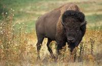

Bison

Bison, also known as American buffalo, are large mammals known for their historical and ecological significance.
Physical Characteristics
- Size: Bison are among the largest land mammals in North America, with males being larger than females.
- Build: They have robust bodies, a hump of muscle on their shoulders, and a large head with a shaggy mane.
- Horns: Both males and females have horns that curve upward, although male horns are generally larger.
Behavior and Habitat
- Habitat: Bison once roamed the grasslands and prairies of North America in large herds.
- Migratory Behavior: They exhibited migratory patterns, following seasonal vegetation and weather patterns.
- Social Structure: Bison are social animals that form hierarchical groups led by dominant individuals.
Ecological Importance
Bison have played a crucial role in shaping the ecosystems they inhabit by influencing vegetation and providing food for predators.
Conservation Status
Bison populations dramatically declined due to overhunting and habitat loss, but conservation efforts have led to population recovery.
Interesting Facts
- Historical Significance: Bison were integral to the cultures and economies of Native American societies.
- Symbolism: Bison hold cultural and symbolic importance in various societies and are often considered a national symbol in the United States.
- Conservation Efforts: Bison conservation efforts include maintaining protected areas and promoting sustainable ranching practices.